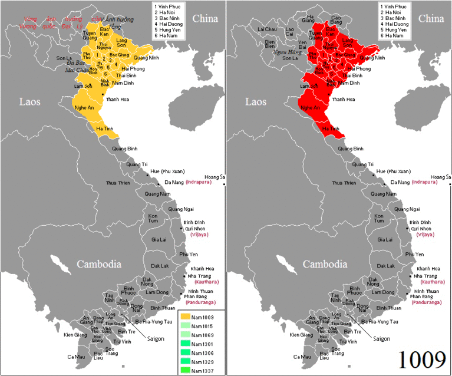

WIKI VIỆT NAM

Việt Nam, quốc hiệu là Cộng hòa xã hội chủ nghĩa Việt Nam, là một quốc gia nằm ở cực Đông của bán đảo Đông Dương thuộc khu vực Đông Nam Á, giáp với Lào, Campuchia, Trung Quốc, biển Đông và vịnh Thái Lan.
Đến thời cận đại, Việt Nam lần lượt trải qua các giai đoạn Pháp thuộc và Nhật thuộc. Sau khi đánh bại và buộc Nhật Bản đầu hàng, phe Đồng Minh tạo điều kiện cho Pháp thu hồi Liên bang Đông Dương. Kết thúc Thế chiến
II, Việt Nam chịu sự can thiệp của các nước Đồng Minh bao gồm Anh, Pháp (miền Nam), Trung Hoa Dân Quốc (miền Bắc). Nhà nước Việt Nam Dân chủ Cộng hòa do Việt Minh lãnh đạo ra đời khi
Hồ Chí Minh
tuyên bố độc lập vào ngày 2 tháng 9 năm 1945 sau thành công của Cách mạng Tháng Tám và chiến thắng Liên hiệp Pháp cùng Quốc gia Việt Nam do Pháp hậu thuẫn trong chiến tranh Đông Dương lần thứ nhất. Sự kiện này dẫn tới Hiệp định Genève (1954) được ký kết và Việt Nam bị chia cắt thành hai vùng tập kết quân sự, lấy ranh giới là vĩ tuyến 17. Việt Nam Dân chủ Cộng hòa kiểm soát phần phía bắc còn phía nam do Việt Nam Cộng hòa
(nhà nước kế tục Quốc gia Việt Nam) kiểm soát và được Hoa Kỳ hậu thuẫn. Xung đột về vấn đề thống nhất lãnh thổ đã dẫn tới chiến tranh Việt Nam với sự can thiệp của nhiều nước và kết thúc với chiến thắng của Việt Nam Dân chủ Cộng hòa, Mặt trận Dân tộc Giải phóng miền Nam Việt Nam cùng sự sụp đổ của Việt Nam Cộng hòa vào năm 1975. Chủ quyền phần phía Nam được chính quyền Cộng hòa miền Nam Việt Nam (do Mặt trận Dân tộc Giải phóng miền Nam Việt Nam thành lập) giành quyền kiểm soát. Năm 1976, Việt Nam Dân chủ Cộng hòa và Cộng hòa miền Nam Việt Nam thống nhất thành Cộng hòa xã hội chủ nghĩa Việt Nam.

Một số hình ảnh về chiến tranh Việt Nam
Sau khi tái thống nhất, Việt Nam tiếp tục gặp khó khăn do sự sụp đổ và tan rã của đồng minh Liên Xô cùng Khối phía Đông, các lệnh cấm vận của Hoa Kỳ, chiến tranh Đông Dương lần thứ ba và hậu quả của chính sách bao cấp sau nhiều năm áp dụng. Năm 1986, Đảng Cộng sản Việt Nam ban hành cải cách đổi mới, xây dựng kinh tế thị trường và hội nhập sâu rộng. Cải cách kinh tế cùng quy mô dân số lớn đưa Việt Nam trở thành một trong những nước đang phát triển có tốc độ tăng trưởng thuộc nhóm nhanh nhất thế giới, được coi là Hổ mới châu Á dù cho vẫn gặp phải những thách thức như tham nhũng, tội phạm gia tăng, ô nhiễm môi trường và phúc lợi xã hội chưa đầy đủ. Ngoài ra, giới bất đồng chính kiến, chính phủ một số nước phương Tây và các tổ chức theo dõi nhân quyền có quan điểm chỉ trích hồ sơ nhân quyền của Việt Nam liên quan đến các vấn đề tôn giáo, kiểm duyệt truyền thông và tự do dân sự.
Việt Nam có diện tích 331.212 km², đường biên giới trên đất liền dài 4.639 km, đường bờ biển trải dài 3.260 km, có chung đường biên giới trên biển với Thái Lan qua vịnh Thái Lan và với Trung Quốc, Philippines, Indonesia, Brunei, Malaysia qua Biển Đông. Việt Nam tuyên bố chủ quyền đối với hai thực thể địa lí tranh chấp trên Biển Đông là các quần đảo Hoàng Sa (bị mất kiểm soát trên thực tế) và Trường Sa (kiểm soát một phần). Khoảng cách giữa cực Bắc và cực Nam của Việt Nam theo đường chim bay là 1.650 km. Nơi có chiều ngang hẹp nhất ở Quảng Bình với chưa đầy 50 km. Đường biên giới đất liền dài hơn 4.600 km, trong đó, biên giới với Lào dài nhất (gần 2.100 km ), tiếp đến là Trung Quốc và Campuchia. Tổng diện tích là 331.212 km² gồm toàn bộ phần đất liền và hải đảo cùng hơn 4.000 hòn đảo, bãi đá ngầm và cả hai quần đảo trên Biển Đông là Trường Sa (thuộc tỉnh Khánh Hòa ) và Hoàng Sa (thuộc thành phố Đà Nẵng ) mà nhà nước tuyên bố chủ quyền.
Hình ảnh bản đồ Việt Nam
Địa hình Việt Nam có núi rừng chiếm khoảng 40%, đồi 40% và độ che phủ khoảng 75% diện tích đất nước. Có các dãy núi và cao nguyên như dãy Hoàng Liên Sơn, cao nguyên Sơn La ở phía bắc, dãy Bạch Mã và các cao nguyên theo dãy Trường Sơn ở phía nam. Mạng lưới sông, hồ ở vùng đồng bằng châu thổ hoặc miền núi phía Bắc và Tây Nguyên. Đồng bằng chiếm khoảng 1/4 diện tích, gồm các đồng bằng châu thổ như đồng bằng sông Hồng, sông Cửu Long và các vùng đồng bằng ven biển miền Trung, là vùng tập trung dân cư. Đất canh tác chiếm 17% tổng diện tích đất Việt Nam.
Đất chủ yếu là đất ferralit vùng đồi núi (ở Tây Nguyên hình thành trên đá bazan) và đất phù sa đồng bằng. Ven biển đồng bằng sông Hồng và sông Cửu Long tập trung đất phèn. Rừng ở Việt Nam chủ yếu là rừng rậm nhiệt đới khu vực đồi núi còn vùng đất thấp ven biển có rừng ngập mặn. Đất liền có các mỏ khoáng sản như phosphat, vàng. Than đá có nhiều nhất ở Quảng Ninh. Sắt ở Thái Nguyên, Hà Tĩnh. Ở biển có các mỏ dầu và khí tự nhiên.
Việt Nam có khí hậu nhiệt đới gió mùa, thời tiết có sự biến động. Phía bắc dãy Bạch Mã có 2 mùa gió chính: gió mùa Đông Bắc lạnh và khô vào mùa đông tạo nên mùa đông lạnh; gió Tây Nam nóng khô và Đông Nam ẩm ướt vào mùa hè. Phía nam có gió Đông Bắc vào mùa khô và gió Tây Nam vào mùa mưa. Các dòng biển phần nào đó điều hòa khí hậu. Độ ẩm tương đối trung bình là 84% suốt năm. Việt Nam trải qua các đợt lụt và bão, có lượng mưa từ 1.200 đến 3.000 mm, số giờ nắng khoảng 1.500 đến 3.000 giờ/năm và nhiệt độ từ 5 °C đến 37 °C. Nhiệt độ trung bình năm tăng khoảng 0,5 độ Celsius trong vòng 50 năm (1964–2014).
Các nhà khảo cổ học tìm thấy những dấu vết của người đứng thẳng thời đồ đá cũ trên lãnh thổ Việt Nam cách đây khoảng 500.000 năm; các công cụ thô sơ bằng đá và các dấu răng của người tiền sử được phát hiện tại các tỉnh Lạng Sơn, Thanh Hóa, Yên Bái, Ninh Bình và Quảng Bình. Ngoài ra, tại các vùng phía Bắc, con người sinh sống trong các hang động đá vôi và sống bằng các hoạt động săn thú, hái lượm. Trong khi đó, tại các vùng duyên hải miền Trung như Nghệ An, con người chủ yếu sống bằng đánh cá.
Thay đổi lãnh thổ từ triều Lý năm 1009 đến hết triều Nguyễn năm 1945 cùng cuộc Nam tiến (1069–1757)
Đến thời đại đồ đá mới cách đây 5000 đến 6000 năm, người Việt cổ bắt đầu biết canh tác lúa nước; loạt dấu vết trồng lúa có từ cao nguyên tới đồng bằng. Ngoài ra, con người bắt đầu biết chế tác công cụ theo kiểu khác và làm đồ gốm với kỹ thuật khác. Đến khoảng thiên niên kỷ I TCN vào cuối thời kỳ đồ đồng, khu vực lúa nước ở sông Hồng và sông Cả phát triển thành nền văn hóa Đông Sơn rồi cùng thời gian đó, những nhà nước đầu tiên lần lượt xuất hiện đó là Văn Lang và Âu Lạc.
Từ thế kỷ II TCN, các triều đại phong kiến từ phương Bắc cai trị một phần Việt Nam hơn 1000 năm. Sự cai trị này bị ngắt quãng bởi những cuộc khởi nghĩa của những tướng lĩnh như Bà Triệu, Mai Thúc Loan, Hai Bà Trưng hay Lý Bí. Năm 905, Khúc Thừa Dụ giành quyền tự chủ, không phải là độc lập vì Dụ tự nhận mình là quan triều đình phương Bắc. Đến năm 938, sau khi chỉ huy trận sông Bạch Đằng đánh bại quân Nam Hán, Ngô Quyền lập triều xưng vương, đánh dấu một nhà nước độc lập khỏi các triều đình phương Bắc vào năm 939.
Sau nhà Ngô, lần lượt các triều Đinh, Tiền Lê, Lý và Trần tổ chức chính quyền tương tự các triều đại Trung Hoa, lấy Phật giáo làm tôn giáo chính của quốc gia và cho truyền bá cả Nho giáo và Đạo giáo. Nhà Tiền Lê, Lý và Trần đã chống trả các cuộc tấn công của nhà Tống và nhà Mông – Nguyên, đều thắng lợi và bảo vệ được Đại Việt. Năm 1400, Hồ Quý Ly cướp ngôi nhà Trần, lập nhà Hồ, đổi tên nước là Đại Ngu, tiến hành cải cách. Năm 1407, Đại Ngu bị Nhà Minh thôn tính. một số thành viên hoàng tộc nhà Trần khởi nghĩa, lập nhà Hậu Trần và bị quân Minh đánh bại sau 7 năm. Năm 1427, Lê Lợi đánh đuổi quân Minh, lập nhà Hậu Lê, giành lại độc lập (năm 1428). Có quan điểm cho rằng đây là triều đại mà phong kiến Việt Nam đạt "đỉnh cao" đặc biệt là đời vua Lê Thánh Tông (1460–1497).
Vào đầu thế kỷ XVI, Nhà Lê sơ bị Nhà Mạc cướp ngôi nên một bộ phận quan lại trung thành đã lập người khác trong dòng dõi vua Lê lên làm vua, tái lập Nhà Lê. Nhà Lê trung hưng sau 60 năm giao tranh đã chiến thắng, diệt Nhà Mạc. Vua Lê khi đó là bù nhìn, hai tập đoàn phong kiến Chúa Trịnh và Chúa Nguyễn tranh chấp nhau, gây chiến tranh kéo dài hơn 100 năm, chia cắt Đại Việt thành đàng Ngoài và đàng Trong trong 200 năm. Cuối thế kỷ XVIII, tướng khởi nghĩa Nguyễn Huệ trong 15 năm đã đánh bại cả Chúa Trịnh và Chúa Nguyễn cùng các cuộc xâm chiếm của Xiêm và Thanh để lập Nhà Tây Sơn. Nguyễn Huệ mất, với người kế vị Cảnh Thịnh, nhà Tây Sơn bị Nguyễn Ánh – một thành viên dòng họ Chúa Nguyễn cùng với viện trợ từ Pháp và Xiêm lật đổ, lập Nhà Nguyễn, triều đại cuối cùng ở Việt Nam. Thời phong kiến, các triều Lý, Trần, Hậu Lê và chúa Nguyễn thu phục Chiêm Thành, Chân Lạp và Tây Nguyên ở phía Nam.
Phương Tây tiếp cận Việt Nam từ thế kỷ XVI. Vào thế kỷ XVII, Đàng Tron g và Đàng Ngoài trao đổi thương mại trước hết với Bồ Đào Nha và Hà Lan, sau thêm Anh và Pháp. Các tu sĩ Dòng Tên do Bồ Đào Nha bảo trợ đến truyền bá Công giáo từ năm 1615 rồi Hội Thừa sai Paris và Dòng Đa Minh tiếp nối. Công giáo tại Việt Nam phát triển trong 2 thế kỷ tiên khởi XVII và XVIII. Từ thời Gia Long, Nhà Nguyễn bế quan tỏa cảng, cấm ngoại thương, không tiếp xúc công nghệ tiên tiến. Nửa sau thế kỷ 19, Pháp xâm lược bán đảo Đông Dương, thâu tóm nhà Nguyễn và thành lập Liên bang Đông Dương năm 1887. Thời Pháp thuộc, văn hóa, khoa học, kỹ thuật phương Tây được tăng cường truyền bá.
Thế chiến thứ 2, Nhật đảo chính Pháp ở Đông Dương, dựng nên Đế quốc Việt Nam, chính thể bù nhìn này phải nộp thuế và cung ứng cho Nhật tài nguyên có lúa gạo, góp phần gây nạn đói Ất Dậu. Sau khi Nhật đầu hàng Đồng Minh, Hồ Chí Minh lãnh đạo Việt Minh giành chính quyền, đọc Tuyên ngôn Độc lập thành lập Việt Nam Dân chủ Cộng hòa ngày 2 tháng 9 năm 1945. Pháp tính lấy lại Đông Dương, nhưng vấp phải sự phản kháng của Việt Nam Dân chủ Cộng hòa nên đã buộc phải hậu thuẫn lập Quốc gia Việt Nam do Bảo Đại, cựu hoàng đế Nhà Nguyễn làm Quốc trưởng.
Năm 1954, Chiến tranh Đông Dương kết thúc, Pháp phải công nhận sự độc lập của Việt Nam và rút quân, xuất hiện 2 vùng tập kết quân sự chờ cuộc bầu cử thống nhất đất nước nhưng không thành do Hoa Kỳ hậu thuẫn cho Việt Nam Cộng hòa (chính phủ kế thừa Quốc gia Việt Nam) từ chối tổ chức bầu cử. Nhà nước xã hội chủ nghĩa Việt Nam Dân chủ Cộng hòa hậu thuẫn các lực lượng miền Nam nổi dậy chống Chính phủ Việt Nam Cộng hòa, gây ra xung đột quân sự mà tiếp theo đó là sự tham chiến của quân đội Hoa Kỳ và đồng minh. Chiến tranh kết thúc vào ngày 30 tháng 4 năm 1975 khi Tổng thống Việt Nam Cộng hòa tuyên bố đầu hàng.
Lễ tuyên bố thành lập Việt Nam Dân chủ Cộng hòa tại quảng trường Ba Đình năm 1945
Năm 1976, Cộng hòa Miền Nam Việt Nam và Việt Nam Dân chủ Cộng hòa tổ chức tuyển cử hợp nhất. Do hậu quả chiến tranh, rồi chiến tranh biên giới phía Bắc, chiến tranh biên giới Tây Nam, chính sách bao cấp và bị Hoa Kỳ cấm vận, nước Việt Nam thời hậu chiến phải đối mặt với các vấn đề nghiêm trọng trong lĩnh vực kinh tế-xã hội. Năm 1986, Đại hội Đảng lần VI chấp thuận Đổi mới, cải tổ nhà nước và chuyển nền kinh tế theo hướng mới. Việt Nam bình thường hóa quan hệ với Hoa Kỳ năm 1995 và gia nhập ASEAN vào cùng năm. Năm 2007, Việt Nam gia nhập tổ chức kinh tế thế giới WTO.
Chính sách Đổi mới năm 1986 đã thiết lập mô hình "Kinh tế thị trường định hướng xã hội chủ nghĩa". Các thành phần kinh tế được mở rộng hơn nhưng những ngành kinh tế chủ lực, thiết yếu vẫn dưới sự điều hành của Nhà nước. Từ năm 1993 đến 1997, kinh tế Việt Nam đạt tốc độ tăng trưởng trung bình hằng năm khoảng 9%. Tăng trưởng GDP đạt mức 8,5% vào năm 1997 nhưng giảm xuống 4% năm 1998 do ảnh hưởng của cuộc khủng hoảng tài chính châu Á năm 1997 và tăng nhẹ lên mức 4,8% năm 1999. Tăng trưởng GDP tiếp tục tăng lên từ 6% đến 7% trong giai đoạn giữa những năm 2000 và 2002. Ngày 7 tháng 11 năm 2006, Việt Nam được phép gia nhập WTO sau khi kết thúc đàm phán song phương với các nước có yêu cầu và chính thức là thành viên thứ 150 vào ngày 11 tháng 1 năm 2007. Sau cải cách kinh tế – xã hội, theo một số nghiên cứu, bất bình đẳng thu nhập đã gia tăng.
Một góc Thành phố Hồ Chí Minh
Năm 2013, tại một hội thảo ở Hà Nội, các chuyên gia nhận định nền kinh tế Việt Nam đã tăng trưởng chậm lại sau 5 năm gia nhập WTO. Cụ thể, trong giai đoạn 2007–2011, chỉ có năm 2008 là Việt Nam đạt mức tăng trưởng GDP trên 8% dù xuất khẩu tăng 2,4 lần - lên mức 96,9 tỷ USD. Đa phần tỷ trọng xuất khẩu là do khối các doanh nghiệp FDI, chiếm khoảng 60%, mặt hàng xuất khẩu chủ yếu là nông - lâm sản và khoáng sản thô. Sau hội nhập, tỷ trọng nhập siêu cũng tăng, lên mức 18 tỷ USD vào năm 2008. Đến năm 2013, do ảnh hưởng bởi Đại suy thoái, nền kinh tế đối mặt với áp lực lớn từ nợ xấu, lạm phát cùng nợ công tăng mạnh. Tình trạng tham nhũng luôn xếp ở mức cao trên trung bình của thế giới và đồng thời, các vấn đề liên quan đến vốn, đào tạo lao động, quy hoạch đất đai, cải cách hành chính, cơ sở hạ tầng,... cùng hàng chục ngàn thủ tục kinh doanh lỗi thời từ 20 năm trước vẫn còn đang tồn tại.
Theo thống kê năm 2015 của Ngân hàng Thế giới, PPP đầu người của Việt Nam năm 2014 là 5.294,4 USD, bằng 70% so với Philippines, 55,4% so với Indonesia, 37% so với Thái Lan và bằng 6,7% so với Singapore.
Năm 2020, theo công bố của Quỹ Tiền tệ Quốc tế (IMF), quy mô nền kinh tế Việt Nam với 98 triệu dân theo GDP danh nghĩa đạt 340,6 tỷ đô la Mỹ, xếp hạng 37 thế giới, sức mua tương đương đạt 1,047 tỷ đô la Mỹ, xếp hạng 23 toàn cầu, GDP bình quân đầu người theo danh nghĩa là 3,498 USD/người, xếp hạng 115 thế giới, còn theo sức mua là 10,755 USD/người, xếp hạng 106 toàn cầu. Mức độ tự do kinh tế vẫn chỉ ở nhóm trung bình với hạng 90 toàn cầu.
Về địa lý kinh tế, chính phủ Việt Nam phân chia quy hoạch thành các vùng kinh tế – xã hội và các khu vực kinh tế trọng điểm mỗi miền. Các tỉnh có GRDP bình quân đầu người cao nhất: Thành phố Hồ Chí Minh (Sài Gòn), Bình Dương, Bà Rịa – Vũng Tàu, Bắc Ninh, thủ đô Hà Nội,... và GRDP bình quân đầu người thấp nhất: Hà Giang, Lai Châu, Cao Bằng,...
This site was created with the Nicepage